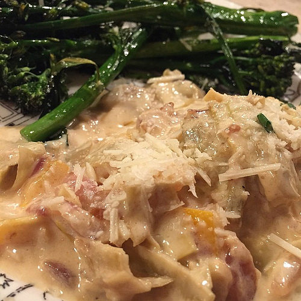
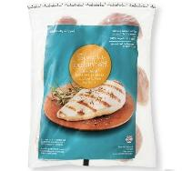

My favorite recipe in 2015
Baked Garlic Parmesan Chicken

Ingredients
- 2 tablespoons olive oil
- 1 clove garlic, minced
- 1 cup dry bread crumbs
- 2/3 cup grated Parmesan cheese
- 1 tablespoon dried basil leaves
- 1/4 teaspoon ground black pepper
- 6 skinless, boneless chicken breast
Advertisment
see details

Directions
Prep: 15m
Cook: 30m
Ready In: 45m
- Preheat oven to 350 degrees F (175 degrees C).
Lightly grease a 9x13 inch baking dish.
- In a bowl, blend the olive oil and garlic.
In a separate bowl, mix the bread crumbs,
Parmesan cheese, basil, and pepper.
Dip each chicken breast in the oil mixture,
then in the bread crumb mixture.
Arrange the coated chicken breasts in the
prepared baking dish, and top with
any remaining bread crumb mixture.
- Bake 30 minutes in the preheated oven,
or until chicken is no longer pink and
juices run clear.
Please follow us on
 or checkout my portofolio here
or checkout my portofolio here